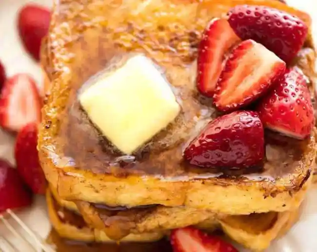

French Toast

Description
You know when you feel like making something grand-ish for a weekend breakfast and but you’re too bleary to tackle Eggs Benedict?
French toast is your answer. Always.
Why? Because it’s effortless, and there’s a plethora of topping options!
Ingredients
- 6 slices brioche or white sandwich bread
- 30 – 40g / 2 – 3 tbsp butter
- 2 large eggs (~60g / 2 oz each)
- ½ cup / 125 ml milk
- 1/2 tsp cinnamon powder
- 1 tsp vanilla extract
- 250g / 8 oz strawberries, halved
- 1 tbsp white sugar
- Maple syrup, butter
Steps
- Whisk together Egg Mixture in a bowl. Vigorous whisk = avoid cinnamon floating on top.
- Melt 15g / 1 tbsp butter in a non stick skillet over medium heat.
- Dunk a piece of bread quickly into the egg mixture, coating both sides. Place in pan. Repeat with more slices to fill the pan, but don’t crowd it (do 2 or 3 at a time).
- ook for 2 ½ - 3 minutes on each side until the surface is golden, then transfer to serving plates.
- Add more butter into the pan and cook remaining bread.
- Serve with butter and plenty of maple syrup, and Macerated Strawberries if using!
GO BACK